awdp-pwn-patch技巧+一些题目
2026.4.25更新：推荐大家用AwdPwnPatcher这个github的python库，因为近几次awdp的uaf修改都是那个标准，而且像在ida中添加字符串这种东西，在这个工具中已经写好了，无需手动坐牢添加，呜呜~~
patch
工具
IDAIDA的keypatch插件这个好像是自带的
patch资料
跳转指令
- 无符号跳转
| 汇编指令 | 描述 |
|---|---|
| JA | 无符号大于则跳转 |
| JNA | 无符号不大于则跳转 |
| JAE | 无符号大于等于则跳转（同JNB） |
| JNAE | 无符号不大于等于则跳转（同JB） |
| JB | 无符号小于则跳转 |
| JNB | 无符号不小于则跳转 |
| JBE | 无符号小于等于则跳转（同JNA） |
| JBNE | 无符号不小于等于则跳转（同JA） |
- 有符号跳转
| 汇编指令 | 描述 |
|---|---|
| JG | 有符号大于则跳转 |
| JNG | 有符号不大于则跳转 |
| JGE | 有符号大于等于则跳转（同JNL） |
| JNGE | 有符号不大于等于则跳转（同JL） |
| JL | 有符号小于则跳转 |
| JNL | 有符号不小于则跳转 |
| JLE | 有符号小于等于则跳转（同JNG） |
| JNLE | 有符号不小于等于则跳转（同JG） |
栈溢出+格式化字符串
函数漏洞如下：
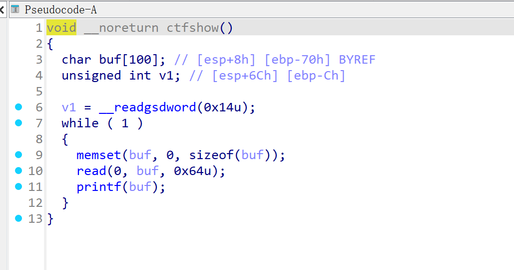
- read栈溢出的话就直接改大小就可以了，右键–> Assemble功能直接改汇编–>回车即可完成–>f5重新反编译，然后保存即可成功
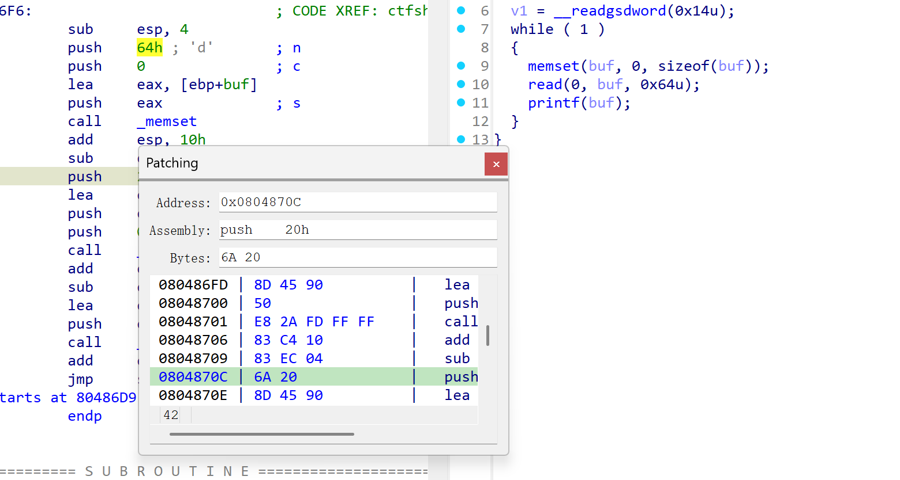
- printf(format)—>puts(format)，和前面一样的操作通过改汇编call _printf—>call _puts前提是有puts函数（可能不通过）
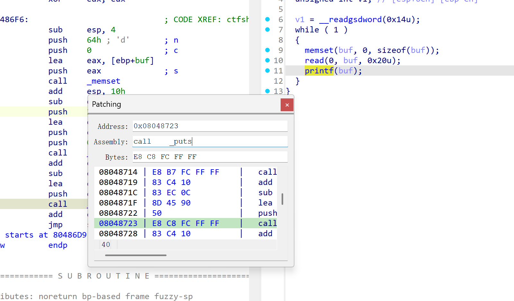
- 无puts@plt，用%s，在eh_frame_hdr或eh_frame选一个地址
% 0x25; s 0x73，patch选中的eh_frame_hdr地址，然后在edi/rdi改为刚才填的%s的地址，改第二个参数esi/rsi为第一个参数，这个找了一个64位的程序（随便找就行）
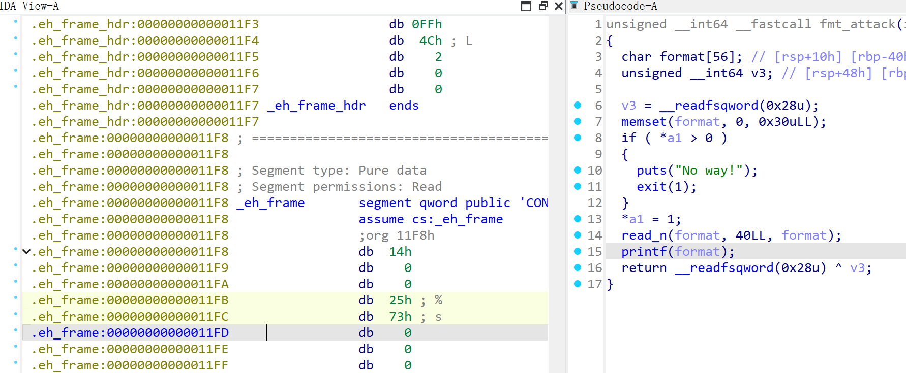
接下来赋值一份此处的机器码，在printf的lea命令处右键，这里需要注意此处的patch bytes中少显示了 call _printf 的机器码的最后一个 FF，先赋值Values中的全部机器码
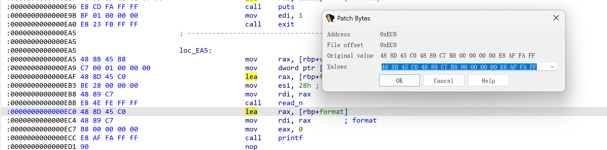
然后把这段程序全部nop掉（从lea到call直接右键NOP），回到eh_frame选个地方修改字节码
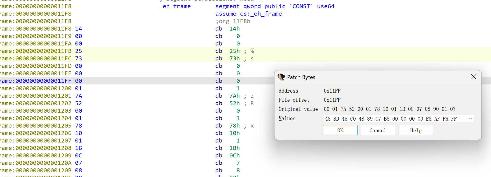
并在末尾补上FF，
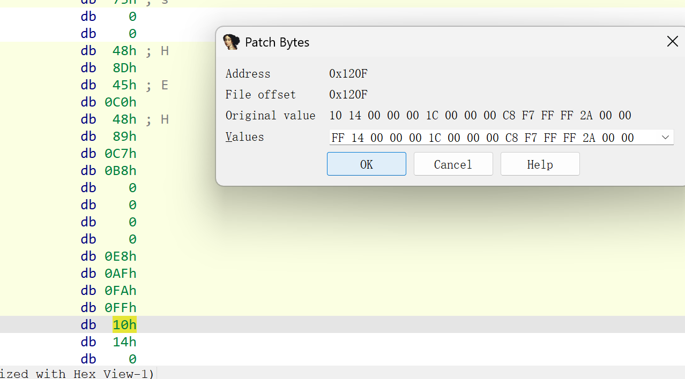
选中我们修改的这一部分指令，按一下C然后选择 ‘force’ 即可让它显示汇编指令，即使本题目开启pie也可以用jmp直接跳转，但是这里有一个问题就是把’%s’穿给rdi来做第一个参数，解决办法呢就是用rip来进行寻址传参此处命令：lea rdi,[rip-0x12]，而且此处质量长度有限可跳回text段续写指令，最终汇编代码效果如下：
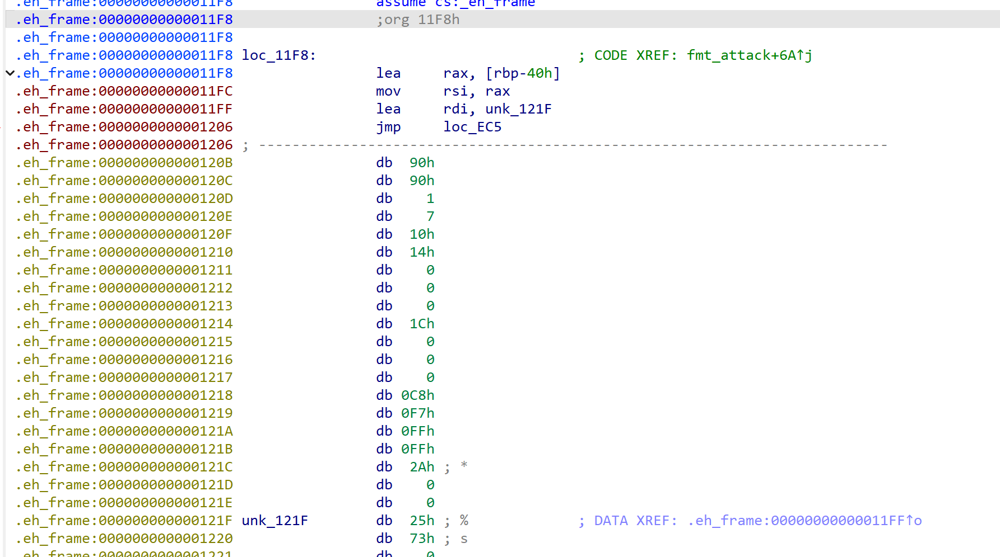
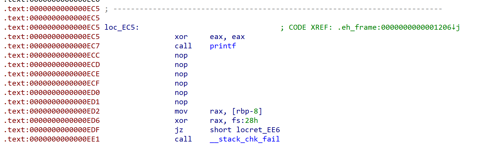
这里有一些注意点：apply_patch 后重新打开文件反编译的printf处可能显示跳转中断，但代码是没问题的，把程序放入linux中仍可以执行，效果如下：
1 | le0n:test/ $ checksec fix3 |
gdb调试截断，可以看到成功运行到我们修改的代码中：
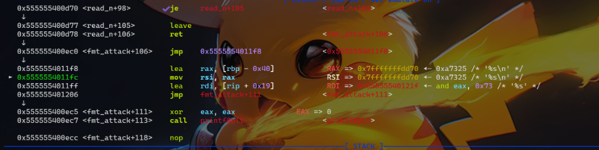
注：堆溢出也就同理了，找到对应给chunk赋值的函数限制它的大小即可
整数溢出

Scanf 以 long int 长整形读取输入到 unsigned int 变量 v2 中，然后将 v2 强制转为 int 再与int 48 比较。
但从 scanf 读入一个负数时，最高位为 1 ，从 unsigned int 强制转换为 int 结果是负数，必定比 48 小，在后面 read 读入会造成栈溢出。
Patch方法
将第 9 行的 if 跳转汇编指令 patch 为无符号的跳转指令，具体指令参考跳转指令。
使用 keypatach 进行修改：jle --> jbe


uaf
首先通过 shift+f7 确认eh_frame段的执行权限，如果只读参考下面这张图片进行修改
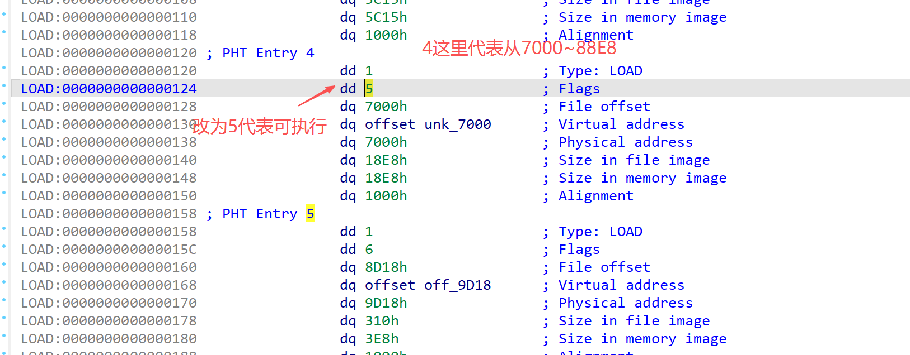
修改逻辑是劫持 call 指令跳转到 .eh_frame 段上写入的自定义汇编程序，如下图
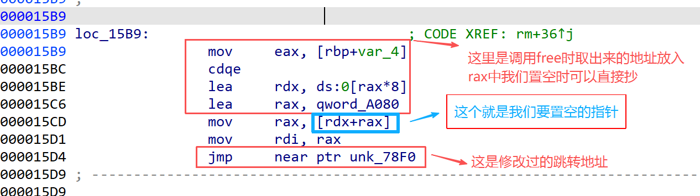
先在 .eh_frame 段上写入代码，首先是 call free 完成释放，然后对 chunk_list（这里就是这个A080） 进行置零。取 chunk_list 地址的汇编可以从 call free 前面抄过来：
1 | call _free; #调用free函数（plt地址） |

数组越界负索引的问题
这是软件系统安全赛的一道pwn题目挺复杂的，只展示漏洞点吧
**方案一：**直接修改变量类型为无符号整型变量，但是0依然可以输入，再exp利用中其实已经可以防御成功了

**方案二：**让0也不行
原始逻辑（有漏洞）
1 | 2DAB mov eax, [rbp+SrcId] |
这里只检查 SrcId > 12 ，没检查 <1 。
所以 SrcId=-3/0 不会跳到 loc_2DFB ，继续 sub eax,1 后变成负索引，访问 ChunkList 越界。
目标逻辑:
- 要的是： if (SrcId < 1 || SrcId > 12) goto loc_2DFB;（但需要的命令长度超出此处范围）
- 等价写法： t = SrcId - 1; if ((unsigned)t > 11) goto loc_2DFB;
把 2DAE~2DB8 这 11 字节整体改掉：
原来 11 字节是：
cmp eax,0Ch (3)
jg short … (2)
mov eax,[rbp+SrcId] (3)
sub eax,1 (3)
改成新的 11 字节：sub eax,1 (3)
cmp eax,0Bh (3)
ja short loc_2DFB (2)
nop (3) 即：
1 | 2DAB mov eax, [rbp+SrcId] |
这套为什么正确
- SrcId=1 -> eax=0 ， 0 > 11 ? 否，放行
- SrcId=12 -> eax=11 ， 11 > 11 ? 否，放行
- SrcId=13 -> eax=12 ， 12 > 11 ? 是，拦截
- SrcId=0 -> eax=-1 （无符号是超大值）， ja 成立，拦截
- SrcId=-3 -> 同理， ja 成立，拦截
所以负数和 0 都被挡住了。
if
假设需要将图上第二个 if 放到 if 结构内，修改跳转的地址即可：

原始跳转代码：

1 | js 0x40081C --> js 0x400845 |

总结
技巧
- read()限制读入长度
- gets()将它的存储地址改为.bss上的，例如将栈地址改为
offest 0x602040 - 格式化字符串
- printf(format)—>puts(format)，通过改汇编call _printf—>call _puts前提是有puts函数
- 无puts@plt，用%s，在eh_frame_hdr选一个地址
% 0x25; s 0x73，patch选中的eh_frame_hdr地址，然后在edi/rdi改为刚才填的%s的地址，改第二个参数esi/rsi为第一个参数
- uaf
- 是在不行的话就nop一下试试
minihttpd
这道题目是19届ciscn初赛pwn方向的题目在github上有存档，应该是iot固件程序漏洞改的题目，题目漏洞呢就是栈溢出
漏洞解析：
在0x427000这个sub_4270函数中是处理set_mode的，存在两处栈溢出

开始测试
那就先测试栈溢出需要填充的长度，此处用gdb调试
开三个终端页面，一个启动程序执行./main
一个用gdb监视命令
gdb -q ./main -p "$(pidof ./main | awk '{print $1}')"
这里可能监视失败需要执行这个echo 0 | sudo tee /proc/sys/kernel/yama/ptrace_scope然后在另一个终端中运行127.0.0.1的测试脚本后就可以在gdb页面进行调试了
1 | def curl(body, content_length): |
启动后直接断在0x402B5A然后n一下，如下图：
然后就可以计算栈溢出的长度了
1 | pwndbg> stack |
在测试一下新的长度，然后就可以发现成功覆盖到rbp和rbp+8的地方
1 | def curl(body, content_length): |
整理思路
然后就要考虑攻击思路了，首先要明确运行./main的那个终端页面，打远程的时候是在服务端的，这就造成了ret2libc的做法泄露出来的libc地址我们是接收不到，间接的说明了泄露libc打orw可能有一定的问题，ret2libc也不行那就只能看看代码段上有没有能利用的汇编代码片段也就是gadget，那就先查一下这道题目的gadgets，可以看到给的挺多的。

然后就在这看ida中的代码理清逻辑并查了一些资料，发现：
- 程序中
sub_402663()这个函数是读取文件的函数，我们控制了它的参数就可以读取服务器上的flag来- 这就导致我们需要在程序bss段等地方写一个
/flag
- 这就导致我们需要在程序bss段等地方写一个
- recv()函数，我们可以劫持程序是服务端执行recv()函数接收字符
/flag
recv() 是 C 语言中用于从已连接套接字（TCP 或 UNIX domain socket）接收数据的函数。它属于 socket 编程的核心函数之一，定义在 <sys/socket.h> 头文件中。
1 |
|
| 参数 | 说明 |
|---|---|
sockfd |
套接字描述符，由 socket() 创建并通常通过 connect() 或 accept() 建立连接。 |
buf |
指向接收数据缓冲区的指针，数据将存储于此。 |
len |
缓冲区的大小（以字节为单位）。 |
flags |
控制接收行为的标志，常用值包括： • 0：正常接收。• MSG_PEEK：窥视数据，但不从系统缓冲区中移除。• MSG_WAITALL：等待所有 len 字节数据才返回（但在某些情况下仍可能提前返回）。• MSG_DONTWAIT：非阻塞操作，与设置套接字非阻塞类似。 |
问题又来了ROPgadget和ropper中没有查到可以控制rdx的gadget，虽然说程序执行到劫持的地方rdx是0x4c够用但容易崩，在程序中找到0x401cf0处的汇编代码调用了recv而且可以控制rdx此处还是0x4c（因为此处rax是0x4c且一直都没变）如下：
1 | .text:0000000000401CF0 B9 00 00 00 00 mov ecx, 0 ; flags |

就是这个东西的长度，此处也是处理set_mode的函数里面
在这里理一下思路：
- 通过溢出控制程序执行流
- 第一步：recv( 4, bss, 0x4c )使
/flag\x00\x00\x00写在程序bss段上 - 第二部：调用
sub_402663()这里用read_file()代替，调用这个函数read_file( 4, bss) - 那么我们就要让程序跳转到bss段上执行read_file( 4, bss);这就需要leave ret;来完成，所以程序rbp覆盖为bss地址即可
exp
最终exp:
1 | from pwn import * |
注意事项：
- tcp通信打包的长度是第一段的长度，然后第二段写在bss上，通过leave ret是程序跳转到bss段执行
- p64(pop_rdi + 1) + p64(recv_plt) 这个相当于ret recv;也相当于call recv。但是并不能替代 start_routine_recv 这里的call _recv
收获
这道题目仿照的真实漏洞场景中的代码，
首先就是在找到漏洞后先搞明白怎么进入漏洞，
然后我们要有耐心的分析代码，尽力为所有函数命名，
最后呢，其实如果写过这样的代码很快就明白怎么进行到漏洞点，并且呢程序有什么甚至可以猜测到，最简单的就比如说这个http协议很快就能直接写出来这个def curl()的函数，如果不懂还得搞半天就比如这次套rtsp协议的拿到题目没一点办法，
拓展到真实漏洞挖掘中我们要不仅能够发现漏洞逻辑，而且呢要有耐心的把他们的业务逻辑代码给看明白。